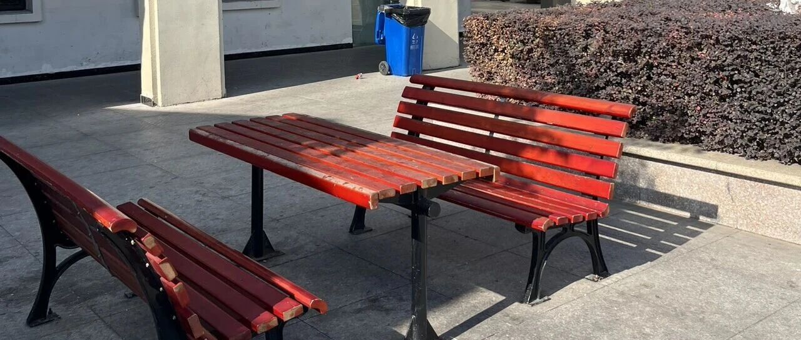

普通人存多少钱才不焦虑！
大家好，我是秋秋呀～
很多人都觉得财务自由提前退休需要很多很多钱，我自己也亲身实践了几年，觉得普通人真的没有那么高标准。
我是每个月利息一万就够花，本金也没大家想象的多。那普通人，存多少钱才足够呢？
我参考了《凡人修仙传》，总结了5个阶段，每个阶段都能让你有些事情不再焦虑。
文末还总结了几个存钱原则，可以帮你财务自由！！！
一、存钱的5个阶段
练气期（0万—5万）
这一阶段不难，但是很重要。
如同修士刚刚引气入体，重在打好根基。
我这笔钱是大学时攒下的，通过教小孩围棋课、卖考研资料，有了第一笔“灵气”。


虽然不多，但足够支付在北京读研期间的生活费和后来押一付三的房租。
5万块钱对于普通人，足够应付半年的生活开支，是生活费自由，能解决基础温饱问题了。
2
筑基期（5万—10万）
你有10万存款，就能解决很多大事。
换个城市、升学、出去旅游、甚至生个病，都不用担心。
我有了10万，从此在花钱的事情上就不再慌张了，还买了很多装备提升自己、学习了很多“法术”（摄影课、理财课、剪辑课）。
这个阶段重点不是存钱，反而是学会花钱。
有的人在有10万就开始膨胀，有的则考虑有个包有个车，都无可厚非，只要能帮助到自己。
3
金丹期（10万—20万）
存到20万，如同结丹成功，终于能“御剑飞行”。
那时候我就开始尝试投资理财这颗"本命飞剑"，用收益覆盖日常饮食开销。
这时才真正体会到，钱不只是工具，更是带你看到更广阔天地的飞行法器。
千万不要觉得钱少就不能理财，20万可以是小城市的一套房，也可以是一年2万多的理财收益，就看你怎么利用。

4
元婴期（20万—50万）
存款在这一阶段，仿佛修出元婴，有了“分身”能力，可以更从容的追求更好的发展。
50万，普通人够养老了。恭喜实现养老自由。
能在毕业5年内存够这个钱的人，绝对是生活里的佼佼者。
而有这个存款的人，也能实现基础的吃喝不愁。
这时候工作的压力没有那么大了，我当时就是直接开启做自媒体的路程。
主业+副业+理财收益三头并进，即使暂时失去工作这个“真身”，也有其他收入源维持修炼。

5
化神期（50万—500万）
从100万存款开始，仿佛拥有了自己的“小世界”。你有能力承担更多风险、做出更多选择。
100万，我认为在二三线生活就足够了。恭喜实现不上班自由。
而想从100-300-500-1000万，真诚说，靠上班，很难。
我自己的存钱过程是一个指数上升的过程，0-50万用2年，50-500万也用2年。
想实现收入跃进，付出的脑力就要更多，而达到500万，普通人几乎就可以财务自由了。

二、秋秋存钱原则
针对存钱，我也下总结了一些原则，让我少走弯路，大家可以结合自身情况参考。
向聪明人学习
首先要在心态上发生转变，意识到自己没有那么聪明，才能保持空杯心态。
因为认知的局限，我们其实是不知道自己不知道的，很多道理虽然懂了，但也不知道怎么做。
所以要向聪明人学习，干中学，从实践中学习，模仿他，“抄他的作业”。
比如秋秋刚开始理财时，报课学习定投策略；做内容时研究爆款结构。
还有很多大佬都在说AI好用、是先进生产力，那就一定要用起来，我每天都会在腾讯元宝里问很多问题。
但模仿不是照搬，在理解的的基础上找出适合自己的模式。
2
二八原则让精力聚焦
工作、生活、学习中总会充斥着各种各样的问题，各种社交媒体软件也会消耗着你的注意力。
我们的时间越来越不够用，总有忙了一天，啥也没干的感觉。所以一定要让精力聚焦。
比如我发现自己80%的收入其实是来自20%的核心技能（剪辑+内容创作），所以逐步淘汰了低价值兼职，全力投入高回报领域。
后面发现读研也不是那么重要，于是办理了退学。
存钱时也同样聚焦——控制占支出大头的房租、无价值聚餐、买奢侈品，而非纠结小钱。
3
复利思维
不管是金钱还是知识都具有复利效应，不能只局限于一时的得失（暂时成绩没有起色），要用复利思维、更长远的眼光去看待问题。
比如我从5万本金开始定投，体验了“钱生钱”的魔力，到现在仅靠理财收入就可以覆盖家庭日常开销。
持续的内容创作，写公众号、做短视频、运营社群，这种持续的输出，既能梳理自己的知识也带来了收入的增加。
4
坚持定期复盘
当然也不要一直忙着赶路，及时的回头看看路有没有走对更重要。
现在我也会每月回顾自己的收支，分析资金效率；也会与别人交流，发现不足之处，调整自己行动方向。
比如之前通过复盘，我发现兼职性价比很低，虽然赚的不少，但占用了太多的时间精力，于是转向自媒体赛道，结果收入翻了好几倍。
| 总结 |
存10万就有应对大事的信心，存50万就够养老，存100万普通人就能吃喝不愁。
存钱要了解基础原则，认真践行。
最重要的是开始行动——哪怕每月存下500元，5年后你也会感谢现在的自己。